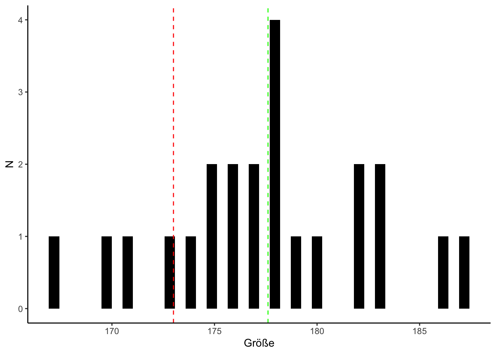

Kapitel 12 Einfache Hypothesentests
12.1 Ein-Stichproben t-Test
Mit einem Ein-Stichproben t-Test vergleichen wir den Mittelwert einer Gruppe mit einem hypothetischen Mittelwert. Zum Beispiel könnten wir eine Stichprobe von Menschen aus Deutschland erhoben haben und uns dafür interessieren, ob diese signifikant größer, bzw. kleiner als der Durchschnitt in Deutschland sind.
Die ersten Zeilen des Stichprobendatensatzes könnten so aussehen:
## gewicht groesse
## 1 77 182
## 2 68 177
## 3 76 170
## 4 76 167
## 5 69 186
## 6 71 178Zunächst brauchen wir einen hypothetischen Vergleichswert. Sucht man die geschlechterübergreifende Durchschnittsgröße in Deutschland im Internet findet man einen Wert von ca. 173 cm.
12.1.2 Deskriptive Einordnung
Die Berechnung unseres Mittelwerts ist einfache Deskriptivstatistik:
mean(data$groesse)## [1] 177.6087Der Sachverhalt lässt sich auch graphisch darstellen:
ggplot(data = data, aes(x = groesse)) +
geom_histogram(bins = 40, fill = "black") +
labs(x = "Größe", y = "N") +
geom_vline(xintercept = 173, linetype = "dashed", colour = "red") +
geom_vline(xintercept = mean(data$groesse), linetype = "dashed", colour = "green") +
theme_classic() 
Die grüne Linie im Zentrum des Histogramms stellt unseren Stichprobenmittelwert dar. Die rote Linie ist der angenommene Mittelwert in der Population von 173 cm.
12.1.3 Test durchführen
Zur Durchführung des Tests nutzen wir die in der Grundform von R vorinstallierte t.test() Funktion.
t.test(data$groesse, mu = 173, alternative = "two.sided", conf.level = 0.95)##
## One Sample t-test
##
## data: data$groesse
## t = 4.4969, df = 22, p-value = 0.0001792
## alternative hypothesis: true mean is not equal to 173
## 95 percent confidence interval:
## 175.4833 179.7341
## sample estimates:
## mean of x
## 177.6087Wir wählen die Variable groesse innerhalb unseres Datensatzes mit dem $ Zeichen an. Über das mu Argument geben wir den hypothetischen Vergleichswert an. Unter alternative können wir auswählen, ob der Test gerichtet oder ungerichtet (aka ein- oder zweiseitig) durchgeführt werden soll. Je nach Hypothese wählen wir "two.sided" für einen ungerichteten Test und entweder "less" oder "greater" für einen gerichteten Test. Das conf.level entsprich unserem Signifikanzniveau.
12.1.4 Ergebnis interpretieren
Das Ergebnis des Tests lässt sich am P-Wert ablesen (p=0.0001792). Ist der P-wert kleiner als das gewählte Signifikanzniveau (i.d.R \(\alpha=.05\)) unterscheidet sich unser Stichprobenmittelwert (177.61 cm) signifikant von der Durchschnittsgröße in Deutschland (173 cm). Wir verwerfen also die Nullhypothese (H0) zugunsten unserer Alternativhypothese (H1).
12.1.5 Ergebnis berichten
Die relevanten Parameter zum Berichten eines Ein-Stichproben t-Tests sind
- M (Mittelwert)
- Grenzen des Konfidenzintervalls des Mittelwerts
- t-Wert (Teststatistik)
- df (Freiheitsgerade)
- P-Wert
Beim Berichten im Fließtext schreibt man:
Die Größe in der Stichpobe unterschied sich signifikant von der Durchschnittsgröße in Deutschland (173 cm), M = 177.61, 95% CI (175.48, 179.73), t (22) = 4.5; p < .001.
Diese Werte lassen sich wie folgt aus dem t-Test Objekt extrahieren:
t-Wert (Teststatistik):
t.test(data$groesse, mu = 173, alternative = "two.sided", conf.level = 0.95)$statistic## t
## 4.496872df (Freiheitsgerade):
t.test(data$groesse, mu = 173, alternative = "two.sided", conf.level = 0.95)$parameter## df
## 22P-Wert:
t.test(data$groesse, mu = 173, alternative = "two.sided", conf.level = 0.95)$p.value## [1] 0.0001792355Grenzen des Konfidenzintervalls (unten & oben):
t.test(data$groesse, mu = 173, alternative = "two.sided", conf.level = 0.95)$conf.int[1]## [1] 175.4833t.test(data$groesse, mu = 173, alternative = "two.sided", conf.level = 0.95)$conf.int[2]## [1] 179.7341Zur sauberen Darstellung des Ergebnisses in einer bereits nach APA formatierten Tabelle, lassen sich die Funktionen apa_print und apa_table aus dem Paket papaja verwenden.
library(papaja)## Lade nötiges Paket: tinylabels## Warning: Paket 'tinylabels' wurde unter R Version 3.6.2 erstelltapa_test <- apa_print(
t.test(data$groesse, mu = 173, alternative = "two.sided", conf.level = 0.95)
)
apa_table(
apa_test$table, caption = "Tabelle für den Ein-Stichproben t-Test."
)| \(M\) | 95% CI | \(t\) | \(\mathit{df}\) | \(p\) |
|---|---|---|---|---|
| 177.61 | [175.48, 179.73] | 4.50 | 22 | < .001 |
12.1.6 Effektstärke
12.1.6.1 Cohen’s d
Die am häufigsten verwendete Effektstärke für den Ein-Stichproben t-Test ist Cohen’s d Cohen (1988).
Cohen’s d lässt sich mit dem Paket effsize berechnen. Dieses verwendet praktischerweise die gleiche Schreibweise, wie der t-Test:
effsize::cohen.d(data$groesse, f = NA, mu = 173)##
## Cohen's d (single sample)
##
## d estimate: 0.9376626 (large)
## Reference mu: 173
## 95 percent confidence interval:
## lower upper
## 0.02651145 1.84881385Auch die Einzelparameter von Cohen’s d lassen sich extrahieren:
Cohen’s d:
effsize::cohen.d(d = data$groesse, f = NA, mu = 173)$estimate## [1] 0.9376626Grenzen des Konfidenzintervalls (unten & oben):
effsize::cohen.d(d = data$groesse, f = NA, mu = 173)$conf.int[1]## lower
## 0.02651145effsize::cohen.d(d = data$groesse, f = NA, mu = 173)$conf.int[2]## upper
## 1.848814Die Interpretation von Cohens’d lautet wie folgt Cohen (1992):
| d | Interpretation |
|---|---|
| |>0.2| | kleiner Effekt |
| |>0.5| | mittlerer Effekt |
| |>0.8| | großer Effekt |
12.2 T-Test bei unabhängigen Stichproben
12.2.1 Deskriptive Einordnung
psych::describeBy(Weight.loss ~ Gender, data = data)##
## Descriptive statistics by group
## Gender: Females
## vars n mean sd median trimmed mad min max range skew kurtosis
## Weight.loss 1 42 6.93 2.24 7 6.9 1.93 1.6 12.2 10.6 0.12 0.38
## se
## Weight.loss 0.35
## ------------------------------------------------------------
## Gender: Males
## vars n mean sd median trimmed mad min max range skew kurtosis
## Weight.loss 1 45 3.72 2.59 3.4 3.75 2.82 -2.1 8.5 10.6 0.01 -0.92
## se
## Weight.loss 0.3912.2.2 Test durchführen
t.test(Weight.loss ~ Gender, data = data)##
## Welch Two Sample t-test
##
## data: Weight.loss by Gender
## t = 6.191, df = 84.544, p-value = 0.00000002069
## alternative hypothesis: true difference in means is not equal to 0
## 95 percent confidence interval:
## 2.178046 4.239097
## sample estimates:
## mean in group Females mean in group Males
## 6.928571 3.720000Alternative Schreibweise:
t.test(data$Weight.loss[data$Gender == "Males"], data$Weight.loss[data$Gender == "Females"])##
## Welch Two Sample t-test
##
## data: data$Weight.loss[data$Gender == "Males"] and data$Weight.loss[data$Gender == "Females"]
## t = -6.191, df = 84.544, p-value = 0.00000002069
## alternative hypothesis: true difference in means is not equal to 0
## 95 percent confidence interval:
## -4.239097 -2.178046
## sample estimates:
## mean of x mean of y
## 3.720000 6.92857112.2.3 Relevante Parameter extrahieren
Die relevanten Parameter zum Berichten eines t-Tests sind
- \(\Delta\)M (Differenz vom Mittelwert zum Referenzwert)
- Grenzen des Konfidenzintervalls der Mittelwertsdifferenz
- t-Wert (Teststatistik)
- df (Freiheitsgerade)
- P-Wert
Diese Werte lassen sich wie folgt aus dem t-Test Objekt extrahieren:
t-Wert (Teststatistik):
t.test(Weight.loss ~ Gender, data = data)$statistic## t
## 6.191013df (Freiheitsgerade):
t.test(Weight.loss ~ Gender, data = data)$parameter## df
## 84.544P-Wert:
t.test(Weight.loss ~ Gender, data = data)$p.value## [1] 0.00000002069288Grenzen des Konfidenzintervalls (unten & oben):
t.test(Weight.loss ~ Gender, data = data)$conf.int[1]## [1] 2.178046t.test(Weight.loss ~ Gender, data = data)$conf.int[2]## [1] 4.23909712.2.4 Voraussetzungsprüfung und Alternativen
Folgende Vorraussetzungen gelten für den t-Test: * Intervallskala * Normalverteilung in beiden Gruppen * Homogenität der Varianzen
Sollten die Vorraussetzungen Intervallskalekniveau und Normalverteilung verletzt sein, muss ein robuster Test gerechnet werden (s.u.).
Die Varianzhomogenität wird mittels Levene’s Test (F-Test) geprüft Levene (1960). Eine Funktion dafür ist im Patek car enthalten.
# https://www.youtube.com/watch?v=717UWGnyQGA&feature=youtu.be
car::leveneTest(Weight.loss ~ Gender, data = data)## Levene's Test for Homogeneity of Variance (center = median)
## Df F value Pr(>F)
## group 1 2.0175 0.1591
## 85Ein signifikanter Levene’s Test bedeutet, dass sich die Varianzen innerhalb der Gruppen signifikant unterscheiden. Sie sind also nicht “homogen”.
Zum Berichten eines Levene’s Test gibt es nicht viel zu tun. Lediglich die Freiheitsgrade, der F-Wert und die Signifikanz sind zu berichten. Die übliche Form hierfür ist die folgende: F(1,49) = 16,908, p = 0,0001493
Liegt keine Varianzhomogenität vor, berechnet man stattdessen einen Welch-Test.
Um einen Welch-Test zu berechnen, ändern wir nur leicht die Funktion:
t.test(Weight.loss ~ Gender, data = data, var.equal = FALSE)##
## Welch Two Sample t-test
##
## data: Weight.loss by Gender
## t = 6.191, df = 84.544, p-value = 0.00000002069
## alternative hypothesis: true difference in means is not equal to 0
## 95 percent confidence interval:
## 2.178046 4.239097
## sample estimates:
## mean in group Females mean in group Males
## 6.928571 3.72000012.2.5 Effektstärke
12.2.5.1 Cohen’s d
Die am häufigsten verwendete Effektstärke für den Vergleich zweier unabhängiger Gruppen ist Cohen’s d Cohen (1988).
Cohen’s d lässt sich mit dem Paket effsize berechnen. Dieses verwendet praktischerweise die gleiche Schreibweise, wie der t-Test:
effsize::cohen.d(Weight.loss ~ Gender, data = data)##
## Cohen's d
##
## d estimate: 1.321689 (large)
## 95 percent confidence interval:
## lower upper
## 0.8508801 1.7924981Auch die Einzelparameter von Cohen’s d lassen sich extrahieren:
Cohen’s d:
effsize::cohen.d(Weight.loss ~ Gender, data = data)$estimate## [1] 1.321689Grenzen des Konfidenzintervalls (unten & oben):
effsize::cohen.d(Weight.loss ~ Gender, data = data)$conf.int[1]## lower
## 0.8508801effsize::cohen.d(Weight.loss ~ Gender, data = data)$conf.int[2]## upper
## 1.792498Die Interpretation von Cohens’d lautet wie folgt Cohen (1992):
| d | Interpretation |
|---|---|
| |>0.2| | kleiner Effekt |
| |>0.5| | mittlerer Effekt |
| |>0.8| | großer Effekt |
12.2.5.2 Hedges’ g
Eine gelegentlich verwendete Alternative zu Cohen’s d ist das Hedges’ g. Hedges’ g wird weitgehend analog zu Cohen’s d verwendet, korrigiert dabei jedoch statistisch für besonders kleine Gruppengößen (N<20) Hedges and Olkin (2014) Es lässt sich mit der selben Funktion berechnen:
effsize::cohen.d(Weight.loss ~ Gender, data = data, hedges.correction = TRUE)##
## Hedges's g
##
## g estimate: 1.309993 (large)
## 95 percent confidence interval:
## lower upper
## 0.8440869 1.7758986Die Interpretation von Hedges’ g ist identisch wie die von von Cohens’d:
| g | Interpretation |
|---|---|
| |>0.2| | kleiner Effekt |
| |>0.5| | mittlerer Effekt |
| |>0.8| | großer Effekt |